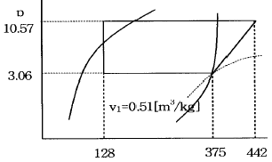
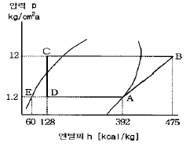

공조냉동기계기능사 (2003-10-05 기출문제)
1과목: 공조냉동안전관리
1. 정의 머리가 버섯 모양으로 되면 어떤 현상이 일어나는가?
- 타격면이 넓어져 조준이 쉬워진다.
- 타격면이 커져서 때리기가 좋아진다.
- 타격순간 미끄러져 손을 다치기 쉽다.
- 타격과 조준이 편리해 정확한 작업이 된다.
(정답률: 87%)

2. 다음 중 장갑을 끼고 하여도 좋은 작업은?
- 용접작업
- 줄작업
- 선반작업
- 세이퍼작업
(정답률: 86%)
3. 차광 안경의 렌즈 색으로 적당한 것은?
- 적색
- 자색
- 갈색
- 회색
(정답률: 55%)
4. 다음은 보일러의 수압시험을 하는 목적이다. 부적합한 것은?
- 균열의 유무를 조사
- 보일러의 변형을 조사
- 이음매의 공작이 잘 되고 못됨을 조사
- 각종 스테이의 효력을 조사
(정답률: 78%)
5. 연소의 위험과 인화점,착화점의 관계가 잘못된 것은?
- 인화점이 낮을 수록, 연소의 위험이 크다.
- 착화점이 높을 수록, 연소의 위험이 크다.
- 산소농도가 높을 수록, 연소의 위험이 크다.
- 연소범위가 넓을 수록, 연소의 위험이 크다.
(정답률: 57%)
6. 보일러 사고원인 중 파열사고의 원인이 될 수 없는 것은?
- 압력초과
- 저수위
- 고수위
- 과열
(정답률: 69%)
7. 응축압력이 상승되는 원인으로 옳은 것은?
- 유분리기 기능양호
- 부하의 급격한 감소
- 외기온도 상승
- 냉각수량 과다
(정답률: 37%)
8. 안전대의 보관장소로 부적당한 곳은?
- 햇빛이 잘 비추는 곳.
- 부식성 물질이 없는 곳.
- 화기등이 근처에 없는 곳.
- 통풍이 잘되고 습기가 없는 곳.
(정답률: 90%)
9. 압축기의 운전 중 이상음이 발생하는 원인이 아닌 것은?
- 기초 볼트의 이완
- 토출 밸브, 흡입 밸브의 파손
- 피스톤 하부에 다량의 오일이 고임
- 크랭크 샤프트 등의 마모
(정답률: 81%)
10. 가스용접 작업의 안전사항에 해당되지 않는 것은?
- 기름 묻은 옷은 인화의 위험이 있으므로 입지 않도록 한다.
- 역화하였을 때에는 산소밸브를 좀 더 연다.
- 역화의 위험을 방지하기 위하여 역화 방지기를 사용 하도록 한다.
- 밸브를 열 때는 용기 앞에서 몸을 피하도록 한다.
(정답률: 69%)
11. 프레온 냉매의 누설검사 방법 중 핼라이드 토치를 이용하여 누설검지를 하였다. 핼라이드 토치의 불꽃색이 녹색이면 어떤 상태인가?
- 정상이다.
- 소량 누설되고 있다.
- 다량 누설되고 있다.
- 누설 양에 상관없이 항상 녹색이다.
(정답률: 70%)
12. 보일러의 취급자의 부주의로 발생한 사고의 원인은?
- 보일러 구조상의 결함
- 보일러 설계상의 결함
- 보일러 재료 선택의 부적당
- 증기 발생 압력의 과다와 이상 감수
(정답률: 64%)
13. 폭발 인화성 위험물 취급에서 주의할 사항 중 틀린 것은?
- 위험물 부근에는 화기를 사용하지 않는다
- 위험물은 습기가 없고 양지바르고 온도가 높은 곳에 둔다
- 위험물은 취급자외에 취급해서는 안된다
- 위험물이 든 용기에 충격을 주든지 난폭하게 취급해서는 안된다
(정답률: 97%)
14. 드릴링 작업 후 관통 여부를 조사하는 방법 중 틀린 것은?
- 손가락을 넣어본다.
- 빛에 비추어 본다.
- 철사를 넣어 본다.
- 전등으로 비추어 본다.
(정답률: 91%)
15. 다음 가스 중 냄새로 쉽게 알 수 있는 것은?
- 프레온가스(R-12), 질소, 이산화탄소
- 일산화탄소, 아르곤, 메탄
- 염소, 암모니아. 메탄올
- 아세틸렌, 부탄, 프로판
(정답률: 76%)
2과목: 냉동기계
16. 전열면적 20m2인 응축기에서 응축수량 0.2톤/분, 열통과 율 800㎉/m2h℃, 냉각수 입구 온도가 32℃, 출구 온도는 40℃일 때, 산술평균 온도차는 몇 ℃ 인가?
- 3℃
- 5℃
- 6℃
- 9℃
(정답률: 60%)
17. 다음 냉매가스 중 1RT당 냉매 가스 순환량이 제일 큰 것은? ( 단, 온도 조건은 동일하다.)
- 암모니아
- 후레온 22
- 후레온 21
- 후레온 11
(정답률: 26%)
18. 이상기체의 엔탈피가 변하지 않는 과정은?
- 가역 단열과정
- 등온과정
- 비가역 압축과정
- 교축과정
(정답률: 50%)
19. 건조 포화 증기를 흡입하는 압축기가 있다. 고압이 일정한 상태에서 저압이 내려가면 이 압축기의 냉동능력은 어떻게 되는가?
- 증대한다.
- 변하지 않는다.
- 감소한다.
- 감소하다가 점차 증대한다.
(정답률: 62%)
20. 횡형 쉘엔 튜브식 응축기에 부착하지 않는 것은?
- 냉각수 배관 출입구
- 역지변(check valve)
- 가용전
- 워터 드레인변(water drain valve)
(정답률: 34%)
21. 증발식 응축기에 관한 사항 중 옳은 것은?
- 응축온도는 외기의 건구온도 보다 습구 온도의 영향을 더 많이 받는다.
- 냉각수의 현열을 이용하여 냉매가스를 응축 시킨다.
- 응축기 냉각관을 통과하여 나오는 공기의 엔탈피는 감소한다.
- 냉각관내 냉매의 압력강하가 작다.
(정답률: 49%)
22. 부하가 감소되면 써어징(surging)현상이 일어나는 압축기는?
- 터어보 압축기
- 왕복동 압축기
- 회전 압축기
- 스크루우 압축기
(정답률: 50%)
23. 다음 중 제빙용 냉동 장치의 증발기로서 가장 적합한 것은?
- 탱크형 냉각기
- 반만액식 냉각기
- 건식 냉각기
- 관 코일식 냉각기
(정답률: 71%)
24. 수냉식 응축기의 능력은 냉각수 온도와 냉각수량에 의해 결정이 되는데, 응축기의 능력을 증대 시키는 방법에 관한 사항중 틀린 것은?
- 냉각수온을 낮춘다.
- 응축기의 냉각관을 세척한다.
- 냉각수량을 늘린다.
- 냉각수 유속을 줄인다.
(정답률: 71%)
25. 드라이어(Dryer)에 관한 사항 중 맞는 것은?
- 암모니아 액관에 설치하여 수분을 제거한다.
- 냉동장치 내에 수분이 존재하는 것은 좋지 않으므로 냉매 종류에 관계없이 설치하여야 한다.
- 프레온은 수분과 잘 용해하지 않으므로 팽창밸브에서의 동결을 방지하기 위하여 설치한다.
- 건조제로는 황산, 염화칼슘 등의 물질을 사용한다.
(정답률: 83%)
26. 냉동장치에서 전자변을 사용하는데 그 사용목적 중 가장 거리가 먼 것은?
- 리키드 백(Liquid back)방지
- 냉매, 브라인의 흐름제어
- 습도 제어
- 온도 제어
(정답률: 60%)
27. 온도식 액면 제어변에 설치된 전열히타의 용도는?
- 감온통의 동파를 방지하기 위해 설치하는 것이다.
- 냉매와 히타가 직접 접촉하여 저항에 의해 작동한다.
- 주로 소형 냉동기에 사용되는 팽창 밸브이다.
- 감온통내에 충진된 가스를 민감하게 작동토록 하기 위해 설치하는 것이다.
(정답률: 70%)
28. 다음은 흡입압력 조정밸브를 설치하는 경우에 대한 설명이다. 틀린 것은?
- 높은 흡입압력으로 장시간 운전할 경우
- 흡입압력이 낮아 압축비가 커질 경우
- 저전압에서 높은 흡입압력으로 운전해야 할 경우
- 흡입압력의 변화가 많은 장치일 경우
(정답률: 41%)
29. 터보 냉동기와 왕복동식 냉동기를 비교 했을 때 터보 냉동기의 특징으로 맞는 것은?
- 회전수가 매우 빠르므로 동작밸런스나 진동이 크다.
- 보수가 어렵고 수명이 짧다.
- 소용량의 냉동기에는 한계가 있고 생산가가 비싸다.
- 저온장치에서도 압축단수가 적어지므로 사용도가 넓다.
(정답률: 39%)
30. 압축기의 축봉장치란 ?
- 냉매 및 윤활유의 누설, 외기의 침입 등을 막는다.
- 축의 베어링 역할을 하며 냉매가 새는 것을 막는다.
- 축이 빠지는 것을 막아주는 역할을 한다.
- 윤활유를 저장하고 있는 장치다.
(정답률: 52%)
31. NH3 냉매를 사용하는 냉동장치에서는 열교환기를 설치하지 않는다. 그 이유는?
- 응축 압력이 낮기 때문에
- 증발 압력이 낮기 때문에
- 비열비 값이 크기 때문에
- 임계점이 높기 때문에
(정답률: 40%)
32. 관끝을 막을 때 사용하는 부속은 어느 것인가?
- 플러그(plug)
- 니플(nipple)
- 유니온(union)
- 밴드(bend)
(정답률: 43%)
33. 다음 중 사용중에 부서지거나 갈라지지 않아서 진동이 있는 장치의 보온재로서 적합한 것은?
- 석면
- 암면
- 규조토
- 탄산마그네슘
(정답률: 18%)
34. 동관을 용접 이음하려고 한다. 다음 용접법 중 가장 적당한 것은?
- 가스 용접
- 프라즈마 용접
- 테르밋 용접
- 스폿 용접
(정답률: 75%)
35. 다음은 동관 공작용 작업 공구이다. 해당사항이 적은 것은 어느 것인가?
- 토오치 램프
- 사이징투울
- 튜우브 벤더
- 봄보올
(정답률: 45%)
36. 사용압력 120㎏/cm2, 허용응력 30㎏/mm2인 압력 배관용 탄소강 강관의 스케쥴(Schedule) 번호는?
- 30
- 40
- 100
- 140
(정답률: 63%)
37. 시퀀스도의 설명으로 가장 적합한 것은?
- 부품의 배치 배선 상태를 구성에 맞게 그린 것이다.
- 동작 순서대로 알기 쉽게 그린 접속도를 말한다.
- 기기 상호간 및 외부와의 전기적인 접속관계를 나타낸 접속도를 말한다.
- 전기 전반에 관한 계통과 전기적인 접속 관계를 단선으로 나타낸 접속도이다.
(정답률: 60%)
38. 오옴의 법칙에 대한 설명 중 옳은 것은?
- 전류는 전압에 비례한다.
- 전류는 저항에 비례한다.
- 전류는 전압의 2승에 비례한다.
- 전류는 저항의 2승에 비례한다.
(정답률: 57%)
39. 100V, 200W 인 가정용 백열전구가 있다. 전압의 평균값은 몇 V인가?
- 약 60
- 약 70
- 약 90
- 약 100
(정답률: 29%)
40. 냉동톤[RT]에 대한 설명 중 맞는 것은?
- 한국 1냉동톤은 미국 1냉동톤보다 크다.
- 한국 1냉동톤은 3024㎉/h이다.
- 냉동능력은 응축온도가 낮을수록,증발온도가 낮을 수록 좋다.
- 1냉동톤은 0℃의 얼음이 1시간에 0℃의 물이 되는데 필요한 열량이다.
(정답률: 67%)
41. R-21의 분자식은?
- CHCL2F
- CCLF3
- CHCLF2
- CCL2F2
(정답률: 55%)
42. 다음 중 P-h선도의 등건조도선에 대한 설명으로 적당하지 못한 것은?
- 습증기 구역 내에서만 존재하는 선이다.
- 과열증기구역에서 우측하단으로 비스듬이 내려간 선이다.
- 포화액의 건조도는 0이고 건조포화증기의 건조도는 1이다.
- 팽창밸브 통과시 발생한 플래시 가스량을 알기위한 선이다.
(정답률: 32%)
43. 다음 p-h선도에서의 압축일량과 성적계수는 각각 얼마인가?

- 압축일량 : 67[kcal/kg], 성적계수 : 4.68
- 압축일량 : 247[kcal/kg], 성적계수 : 3.9
- 압축일량 : 67[kcal/kg], 성적계수 : 3.68
- 압축일량 : 247[kcal/kg], 성적계수 : 3.68
(정답률: 47%)
44. 기체 또는 액체가 갖는 단위중량당 열에너지를 무엇이라 하는가?
- 엔탈피
- 엔트로피
- 비체적
- 비중량
(정답률: 55%)
45. 다음 P-h 선도는 NH3를 냉매로 하는 냉동 장치의 운전상태를 냉동 사이클로 표시한 것이다. 이 냉동장치의 부하가 50,000 [kcal/h]일 때 NH3의 냉매 순환량은 얼마인가?

- 189.4 kg/h
- 602.4 kg/h
- 150.6 kg/h
- 120.5 kg/h
(정답률: 35%)
3과목: 공기조화
46. 유효온도와 관계가 없는 것은?
- 온도
- 습도
- 기류
- 압력
(정답률: 70%)
47. 공기조화기의 가열코일에서 30℃ DB의 공기 3000㎏/h를 40℃ DB까지 가열하였을 때의 가열열량(kcal/h)은? (단, 공기의 비열은 0.24kcal/㎏℃ 이다.)
- 7200
- 8700
- 6200
- 5040
(정답률: 44%)
48. 냉.난방에 필요한 전 송풍량을 하나의 주덕트 만으로 분배하는 방식은?
- 단일 덕트 방식
- 이중 덕트 방식
- 멀티죤 유니트 방식
- 팬 코일 유니트 방식
(정답률: 48%)
49. 공기조화의 제어대상과 거리가 먼 것은?
- 온도
- 소음
- 청정도
- 기류분포
(정답률: 81%)
50. 불쾌지수가 커지는 경우의 공기변화 중 직접적인 관계가 없는 것은?
- 건구온도의 상승
- 습구온도의 상승
- 절대습도의 상승
- 비체적의 상승
(정답률: 50%)
51. 공조방식을 분류한 것 중 전공기 방식이 아닌 것은?
- 단일 닥트 방식
- 유인 유니트 방식
- 이중 닥트 방식
- 각층 유니트 방식
(정답률: 48%)
52. 증기 속에 수분이 많을 경우에 대한 설명 중 틀린 것은?
- 건조도가 작다.
- 증기 엔탈피가 증가한다.
- 배관에 부식이 발생하기 쉽다.
- 증기손실이 크다.
(정답률: 65%)
53. 다음 중 진공식 증기 난방장치의 특징이 아닌 것은?
- 보통 큰 건물에 적용된다
- 방열량을 광범위하게 조절할 수 있다
- 수증기 순환이 원활하다
- 파이프 치수가 커진다
(정답률: 60%)
54. 온풍난방의 특징을 바르게 설명한 것은?
- 예열시간이 짧다.
- 조작이 복잡하다.
- 설비비가 많이든다.
- 소음이 생기지 않는다.
(정답률: 76%)
55. 덕트의 용도별 허용 소음치인 ＮＣ( noise criterion )의 평균치(dB)가 은행 및 우체국에 가장 적당한 것은?
- 10
- 20
- 40
- 80
(정답률: 52%)
56. 난방 부하가 3,000 kcal/h인 온수난방시설에서 방열기의 입구 온도가 85℃, 출구온도가 25℃, 외기온도가 –5℃일 때, 온수의 순환량은 얼마인가? (단, 물의 비열은 1kcal/kg℃ 이다.)
- 50 kg/h
- 75 kg/h
- 150 kg/h
- 450 kg/h
(정답률: 39%)
57. 공기조화용 덕트 부속기기에서 실내에 설치된 연기감지기로 화재의 초기에 발생된 연기를 탐지하여 덕트를 폐쇄시키므로 다른 구역으로 연기의 침투를 방지해주는 부속기 기는 무엇인가?
- 방연 댐퍼
- 챔버
- 방화 댐퍼
- 풍량조절 댐퍼
(정답률: 65%)
58. 최근 공기조화 방식을 설계하는 데 있어서 중점적으로 고려되고 있는 사항이 아닌 것은?
- 건물의 규모
- 에너지 절약 대책
- 잔업시간에 대한 경제적인 운전대책
- 설비의 수명과 지출비용의 경제성 비교
(정답률: 40%)
59. 건축물의 벽이나 지붕을 통하여 실내로 침입하는 열량을 구할 때 관계없는 요소는?
- 면적
- 열관류율
- 상당온도차
- 차폐계수
(정답률: 52%)
60. 다음 설명 중 틀린 것은?
- 불포화 상태에서의 건구온도는 습구온도보다 높게 나타난다.
- 공기에 가습, 감습이 없어도 온도가 변하면 상대습도는 변한다.
- 습공기 절대습도와 포화습공기 절대습도와의 비를 포화도라 한다.
- 습공기 중에 함유되어있는 건조공기의 중량을 절대습도라 한다.
(정답률: 35%)